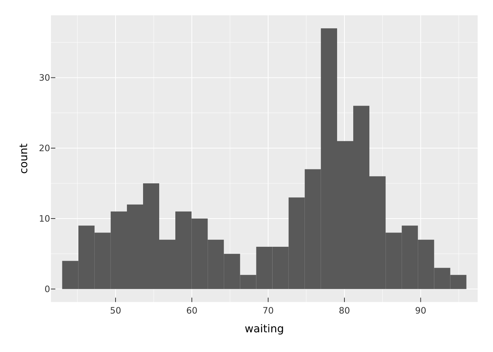
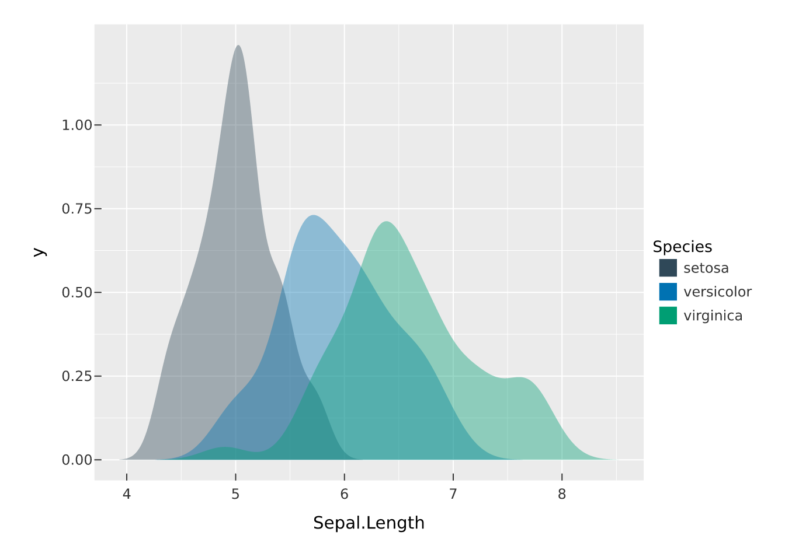
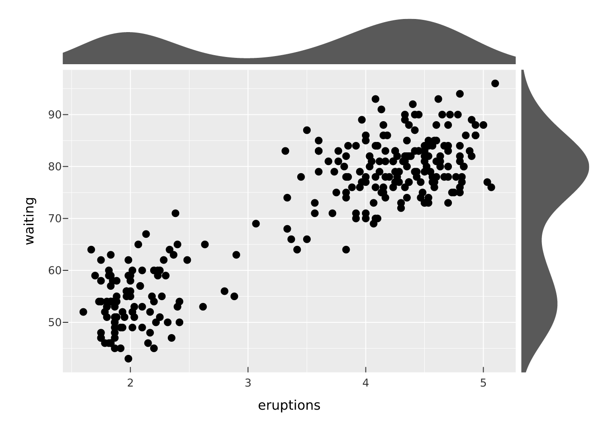
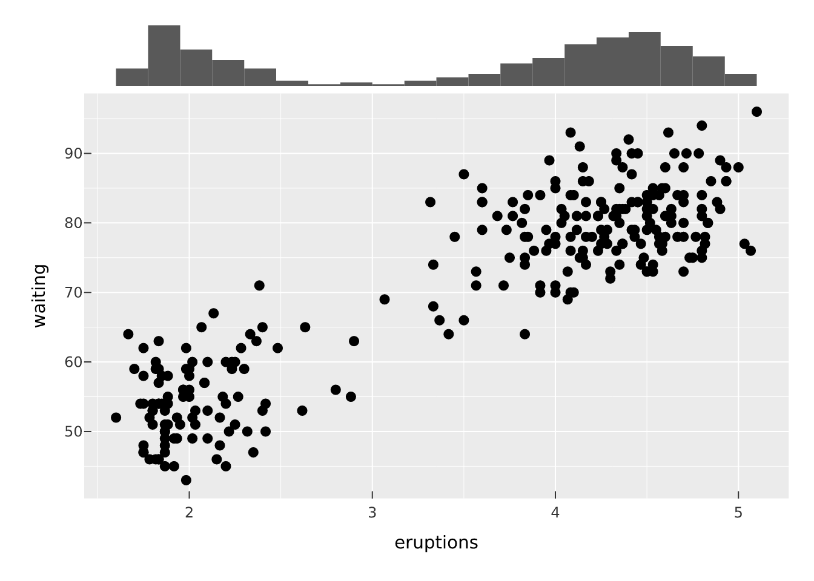
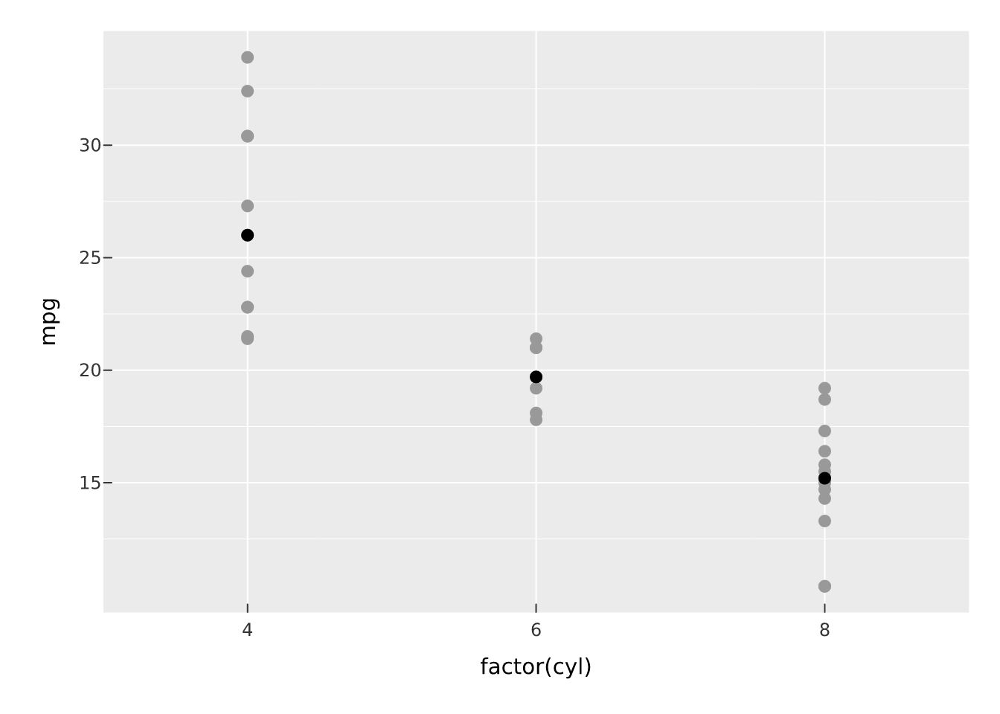
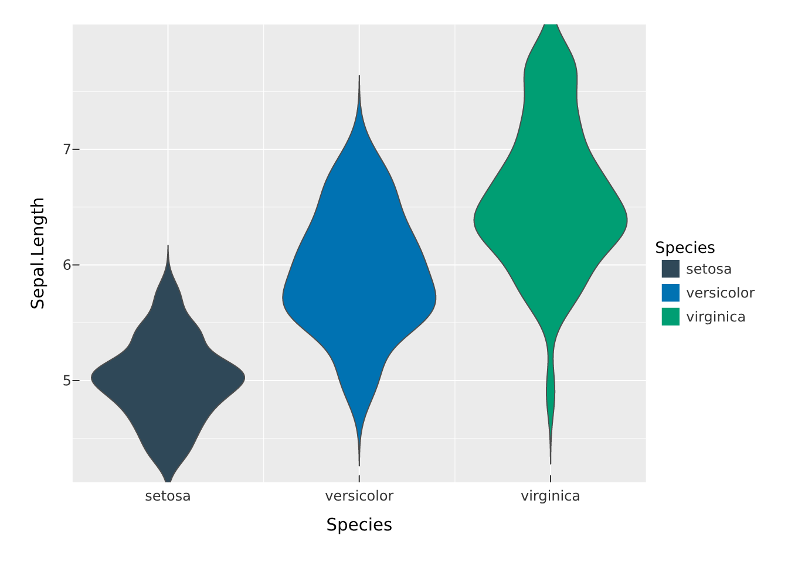
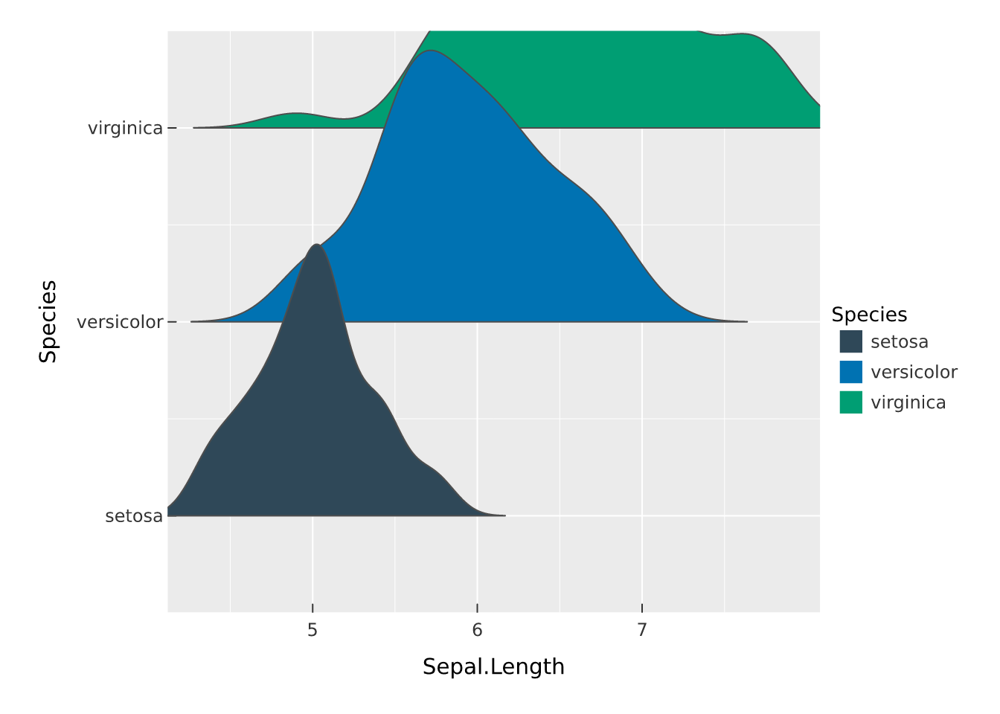
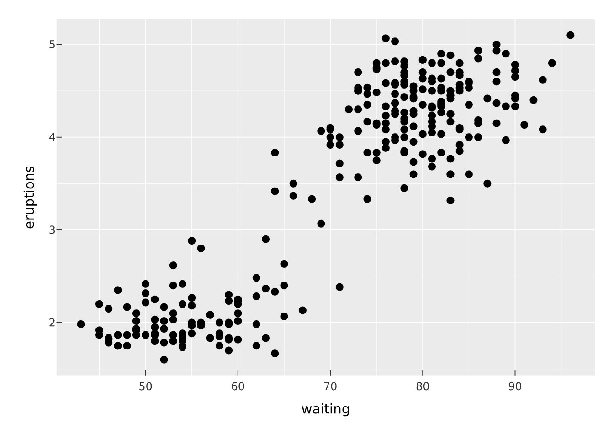
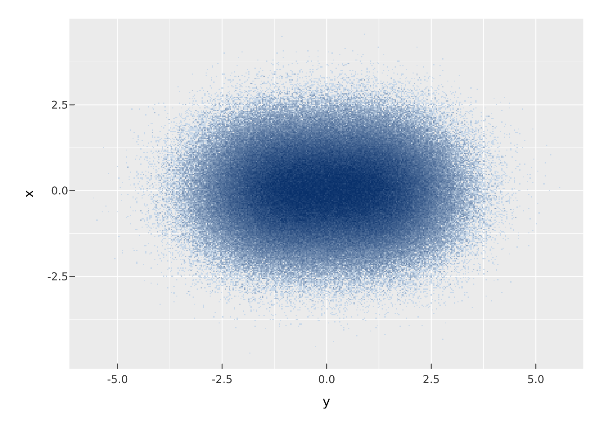

vplot(faithful) |>
mark_histogram(x = waiting, bins = 25)
Most marks draw the data as given. A statistical mark computes something from the data first, then draws the result. vellumplot runs that transform as a stage of the compiler (see The compiler), so a histogram is a mark that bins the data as part of being drawn, rather than something you bin by hand.
mark_histogram() bins a continuous x and draws the per-bin counts as bars. Control the resolution with bins.
vplot(faithful) |>
mark_histogram(x = waiting, bins = 25)
mark_density() draws a smooth kernel-density estimate of x as a filled curve; adjust scales the bandwidth. Densities are on a comparable vertical scale, so mapping fill to a group and overlaying works well.
vplot(iris) |>
mark_density(x = Sepal.Length, fill = Species, alpha = 0.4)
mark_summary() aggregates y within each x category using fun (the mean by default) and draws the result. It is the quick way to add group means over raw data.
vplot(mtcars) |>
mark_point(x = factor(cyl), y = mpg, color = "grey60") |>
mark_summary(x = factor(cyl), y = mpg, fun = median)
mark_smooth() fits a model of y on x (method = "lm") and draws the fitted line with a confidence ribbon when se = TRUE. It layers naturally over the raw points.
vplot(mtcars) |>
mark_point(x = wt, y = mpg) |>
mark_smooth(x = wt, y = mpg, se = TRUE, level = 0.95)
Several marks summarise how a single variable is distributed. mark_ecdf() draws the empirical cumulative distribution of x as a step, which is a scale-free way to compare groups without choosing a bandwidth.
mark_qq() plots the sorted sample against the quantiles of a reference distribution (normal by default); mark_qq_line() adds the reference line through the quartiles. Points on the line mean the sample matches the reference.
vplot(mtcars) |>
mark_qq(sample = mpg) |>
mark_qq_line(sample = mpg)
mark_rug() adds marginal ticks at each observation, a compact companion to a scatter or density. sides picks the edges ("b", "l", "t", "r").
vplot(faithful) |>
mark_point(x = waiting, y = eruptions) |>
mark_rug()
mark_violin() draws a mirrored kernel density of y for each categorical x, a boxplot’s silhouette that shows the full shape of each group.
vplot(iris) |>
mark_violin(x = Species, y = Sepal.Length, fill = Species)
mark_ridgeline() turns that on its side: a density of x per categorical y, with the ridges overlapping so many groups fit in little vertical space. Use the scale argument to tune how much they overlap.
vplot(iris) |>
mark_ridgeline(x = Sepal.Length, y = Species, fill = Species)
mark_dotplot() bins x and stacks one dot per observation, so the height of each stack is a count you can read dot by dot.
vplot(faithful) |>
mark_dotplot(x = waiting)
mark_contour() estimates the 2-D density of a point cloud and draws its iso-density contour lines; mark_contour_filled() fills the bands between them. Both are coloured by level automatically. They read best over the points they summarise:
vplot(faithful) |>
mark_point(x = eruptions, y = waiting, color = "grey70") |>
mark_contour(x = eruptions, y = waiting)
vplot(faithful) |>
mark_contour_filled(x = eruptions, y = waiting)
The density estimate uses MASS::kde2d(); tune the levels with bins, binwidth, or explicit breaks. To contour a surface you already have (a z value on a regular x/y grid) rather than a point density, map z:
grid <- expand.grid(x = seq(-3, 3, 0.1), y = seq(-3, 3, 0.1))
grid$z <- with(grid, dnorm(x) * dnorm(y))
vplot(grid) |> mark_contour(x = x, y = y, z = z)
Contour tracing needs the isoband package (and MASS for the density estimate).
A statistical mark produces new variables that were not in your data: a histogram computes a count and a density, for example. after_stat() lets an encoding refer to one of those computed variables instead of a data column. The classic use is a density-scaled histogram.
vplot(faithful) |>
mark_histogram(x = waiting, bins = 25, fill = after_stat(density))
Because the aesthetic is now driven by a computed value, its scale trains on that value like any other, and you get the matching legend.
When there are too many points to draw one marker each (overplotted, up to millions), individual markers become uninformative and slow to draw. mark_datashade() bins the points into a canvas-sized grid in a single pass and colours each cell by density, drawing one raster. Its cost is decoupled from the number of points.
n <- 5e5
big <- data.frame(
x = rnorm(n),
y = rnorm(n) + rep(c(-1, 1), each = n / 2)
)
vplot(big) |>
mark_datashade(x = y, y = x, how = "eq_hist")
Here how = "eq_hist" uses histogram equalisation so both dense and sparse regions stay visible; the grid resolution is set by width and height. Per-point aesthetics do not apply, because cell colour encodes density rather than any single point.
mark_point() also has an auto = TRUE switch that falls back to a datashaded raster automatically when a layer has very many rows, so you can keep writing mark_point() and let vellumplot choose the representation.